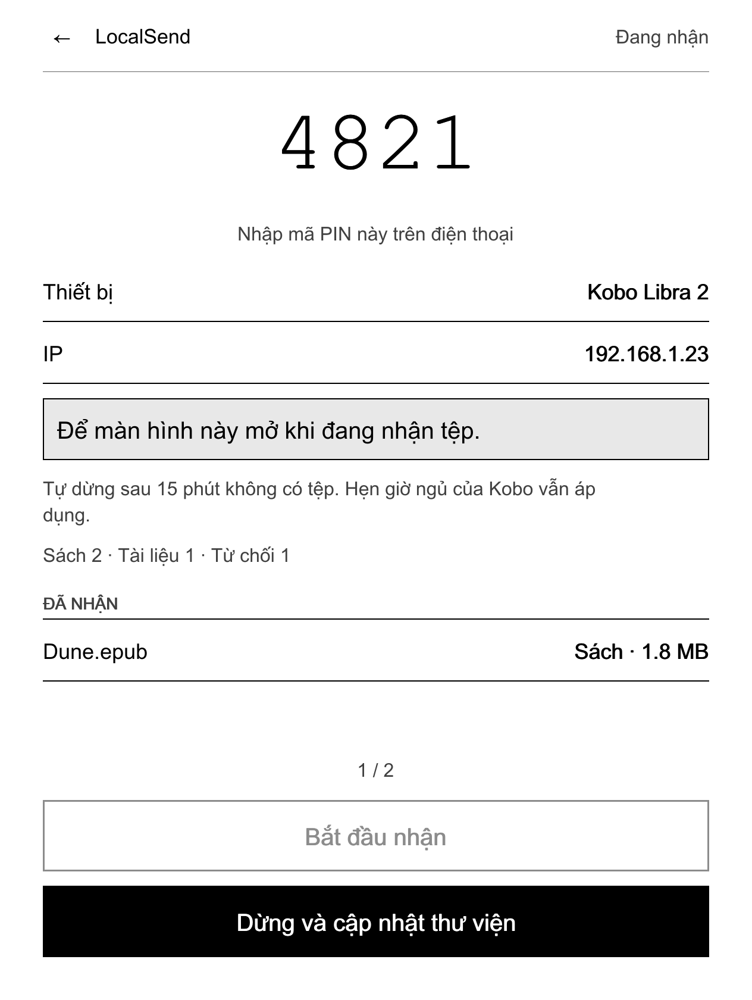
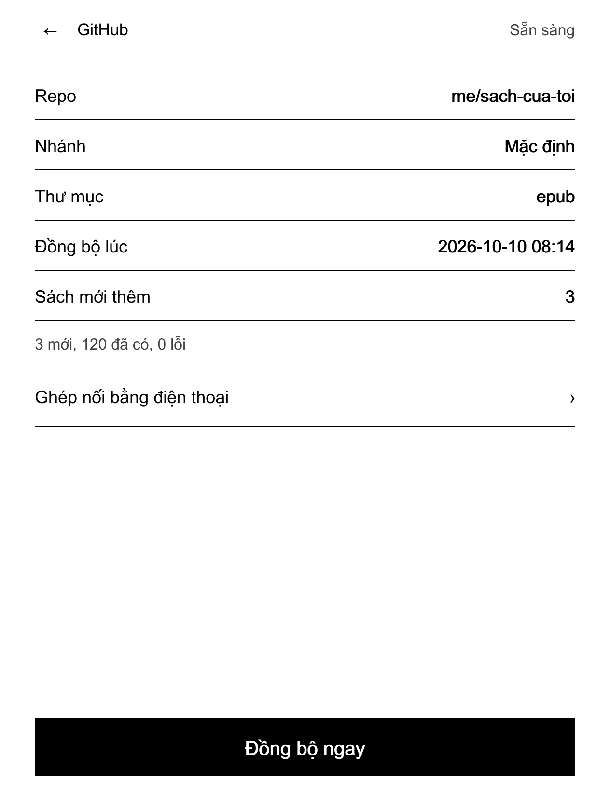
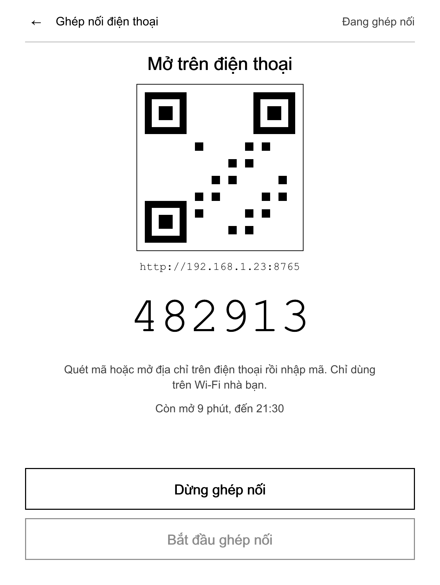
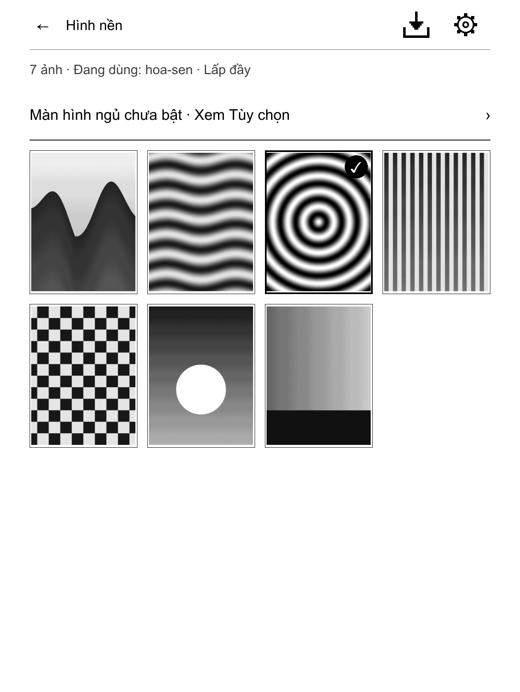
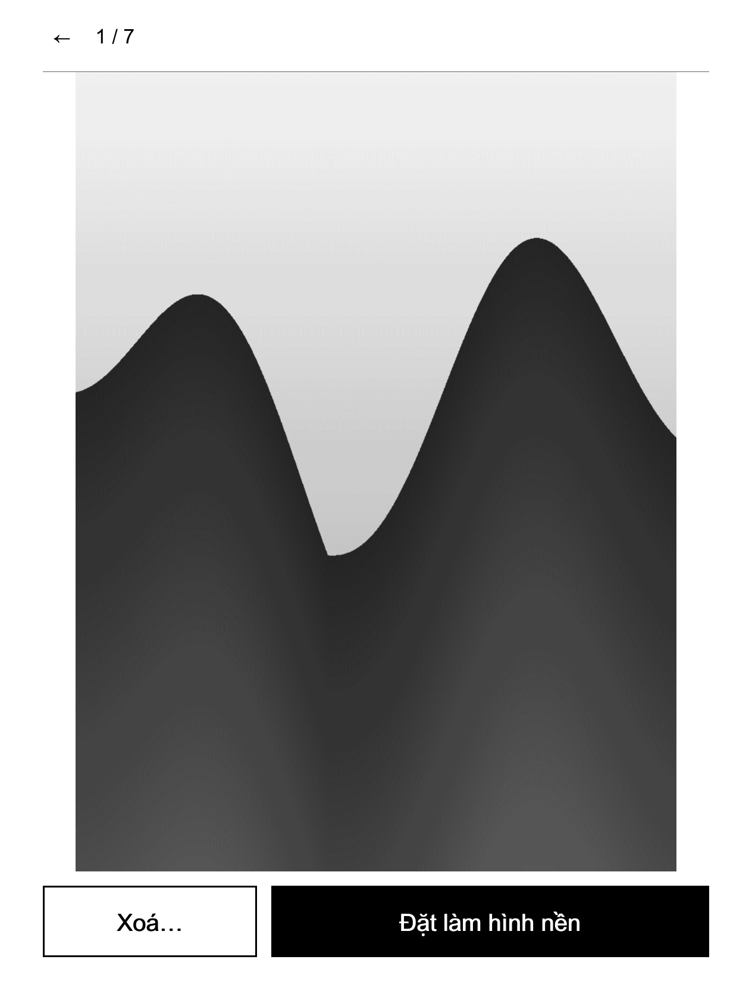
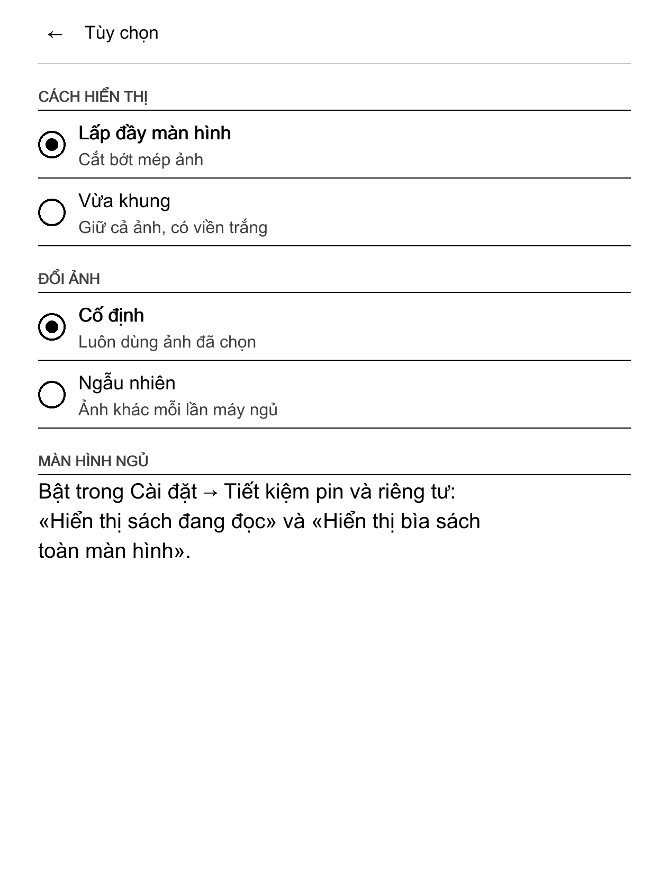
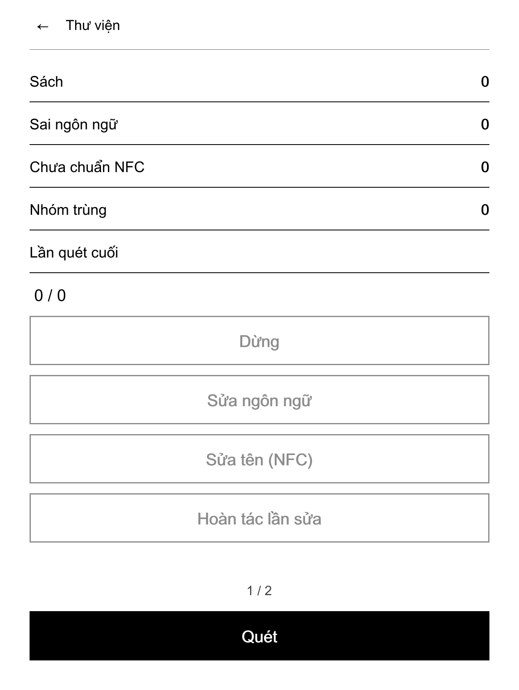
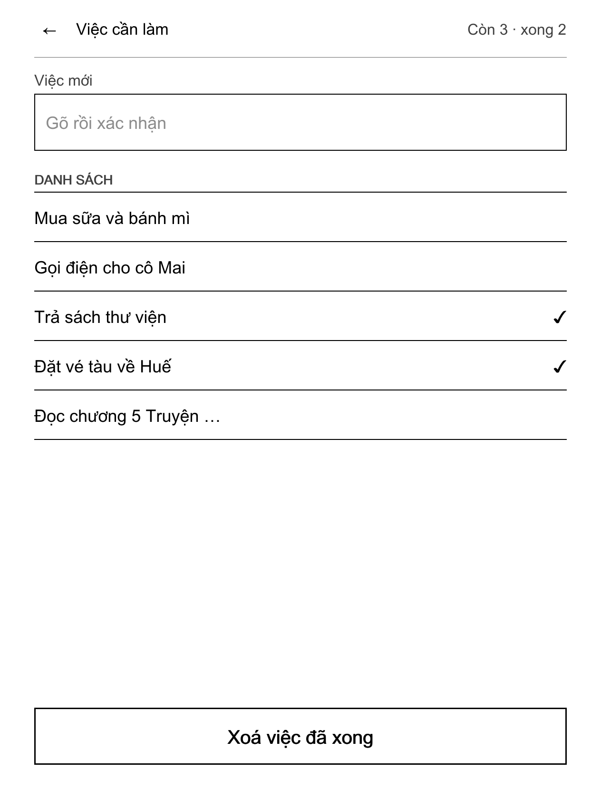

Hướng dẫn sử dụng NickelDrawer
Cài, dùng và gỡ Ngăn Ứng Dụng trên Kobo. Không cần biết lập trình. Dự án độc lập, không liên kết với Rakuten Kobo.
Dành cho người dùng Kobo muốn cài NickelDrawer, dùng các ứng dụng của nó và gỡ ra khi cần. Không cần biết lập trình. Bản tiếng Anh: user-guide.en.md.
Chữ in đậm là đúng chữ bạn thấy trên Kobo để tiếng Việt. Tên có dấu † chưa được đối chiếu trên máy thật; trên máy bạn có thể khác đôi chút.
NickelDrawer là gì (và không phải là gì)
NickelDrawer thêm hai hàng vào tab Thêm của Kobo:
- Ứng dụng mở Ngăn Ứng Dụng: danh sách (hoặc lưới) các công cụ nhỏ, trông giống phần còn lại của Kobo.
- Tinh chỉnh mở một cửa sổ kiểu Cài đặt với các công tắc hay dùng (màn hình chờ, chụp màn hình, tự kết nối USB, chữ rõ nét) và vài thao tác (ngủ, khởi động lại, quét lại thư viện).
Các ứng dụng đi kèm:
| Ứng dụng | Làm gì |
|---|---|
| LocalSend | Nhận sách, tài liệu, truyện tranh và ảnh từ điện thoại qua Wi-Fi. |
| GitHub | Tải sách mới từ repo GitHub riêng của bạn. Chỉ thêm, không xóa. |
| Hình nền | Dùng ảnh của bạn làm màn hình ngủ. |
| Thư viện | Sửa nhãn ngôn ngữ của sách tiếng Việt, chuẩn hóa tên Unicode, tìm sách trùng. |
| Việc cần làm | Danh sách việc cần làm nằm gọn trong máy. |
NickelDrawer không phải là:
- Sản phẩm của Kobo. Đây là dự án độc lập, không do Rakuten Kobo làm, không liên kết và không được Rakuten Kobo bảo trợ. "Kobo" và "Nickel" là nhãn hiệu của chủ sở hữu.
- Ứng dụng đọc sách mới. Nó không thay trình đọc, cửa hàng hay thư viện của Kobo. Nó chỉ thêm hàng và màn hình vào phần mềm gốc của Kobo (tên là Nickel).
- Dịch vụ đám mây. Không cần tài khoản, không gửi gì đi đâu nếu bạn không tự bật một tính năng cần mạng.
- Phần mềm nguồn mở. NickelDrawer công khai mã nguồn theo giấy phép PolyForm Noncommercial 1.0.0: miễn phí cho cá nhân, học tập, sở thích và tổ chức phi lợi nhuận; không dùng cho mục đích thương mại.
Trạng thái: bản thử. NickelDrawer mới được thử trên một máy Kobo Libra 2 với một bản firmware. Một phần đã chạy trên máy đó; phần lớn những gì sách này mô tả mới chỉ được kiểm trên máy tính. Mỗi chương ghi rõ phần nào đã thử trên máy thật. Đọc mục An toàn và gỡ cài đặt trước khi cài.
Kiểm tra máy của bạn có được hỗ trợ không
NickelDrawer hỗ trợ Kobo Libra 2 với một trong năm bản firmware sau:
| Firmware | Tình trạng |
|---|---|
| 4.38.23828 | Các bản thử nghiệm trước của Ngăn và màn hình ứng dụng đã chạy trên máy. Bản hiện tại đang chờ buổi thử đầy đủ trên máy. |
| 4.38.23697 | Chỉ kiểm trên máy tính. Chưa chạy trên máy thật. |
| 4.38.23684 | Chỉ kiểm trên máy tính. Chưa chạy trên máy thật. |
| 4.38.23648 | Chỉ kiểm trên máy tính. Chưa chạy trên máy thật. |
| 4.38.23552 | Chỉ kiểm trên máy tính. Chưa chạy trên máy thật. |
"Kiểm trên máy tính" nghĩa là chương trình đã được kiểm rằng mọi chức năng Kobo nó cần đều có trong bản firmware đó. Không có nghĩa là đã có người dùng thử trên bản đó.
Không hỗ trợ:
- Firmware 5.x. Đừng cài NickelDrawer lên Kobo chạy 5.x. Nếu Kobo mời nâng cấp lên 5.x, hãy từ chối (xem Hỏi đáp).
- Các dòng Kobo khác. Chưa dòng nào khác được kiểm. Đừng cài lên chúng.
Các dòng Kobo khác
Trong 27 mẫu Kobo đã bán, chỉ Libra 2 đã được thử. Libra H2O và Libra Colour có cùng màn 1264×1680 nên dự kiến chạy được nhưng chưa thử. Trên 19 mẫu khác chạy firmware 4.x, Ngăn tự tắt: màn hình ứng dụng được dàn trang cho màn 1264×1680, nên mod kiểm mẫu máy và hiện một lần thông báo "NickelDrawer chưa hỗ trợ máy này". Kobo eReader, Wireless, Mini, máy tính bảng Vox và Arc, cùng mọi Kobo chạy firmware 5.x đều không được hỗ trợ. Ngăn cũng chỉ nạp trên đúng các bản firmware ở trên. Xem bảng đầy đủ và cách giúp thêm một mẫu ở Thiết bị được hỗ trợ.
Xem phiên bản firmware
Trên Kobo:
- Mở Cài đặt → Thông tin thiết bị †.
- Xem dòng phiên bản phần mềm †. Nó có dạng
4.38.23828.
Qua USB (nếu không tìm thấy mục đó):
- Cắm Kobo vào máy tính, bấm Kết nối trên Kobo.
- Mở thư mục ẩn
.kobotrên ổ Kobo, mở tệpversionbằng trình soạn thảo văn bản. - Dòng trong tệp có nhiều phần, cách nhau bằng dấu phẩy. Phần thứ ba là firmware, ví dụ
4.38.23828.
Phần đầu tiên của dòng đó là số sê-ri máy bạn. Đừng dán nó vào báo lỗi công khai.
Nếu phiên bản của bạn không có trong bảng, dừng ở đây. Trên bản đó NickelDrawer sẽ tự tắt (xem Xử lý sự cố).
Trước khi cài
Sao lưu
Làm việc này mỗi lần trước khi cài, cập nhật hay gỡ NickelDrawer.
- Cắm Kobo vào máy tính bằng cáp USB, bấm Kết nối trên Kobo.
-
Cho máy tính hiện tệp ẩn:
- macOS Finder: bấm Cmd + Shift + . (dấu chấm).
- Windows Explorer: Xem → Hiện → Mục ẩn.
- Linux: thường là Ctrl + H trong trình quản lý tệp.
-
Chép nguyên thư mục
.kobovà nguyên thư mục.adds(nếu có) từ ổ Kobo vào một thư mục trên máy tính. Đặt tên theo ngày hôm nay. - Giữ bản sao này cho đến khi bạn yên tâm với NickelDrawer.
Thư mục .kobo chứa cơ sở dữ liệu thư viện (KoboReader.sqlite), cài đặt (Kobo eReader.conf) và ảnh màn hình ngủ. Sách của bạn nằm ở các thư mục thường và không bị việc cài đặt động đến.
Sạc pin
Sạc Kobo từ 50 % trở lên. Việc cài sẽ khởi động lại máy; hết pin giữa chừng là điều không nên.
Việc cài thay đổi những gì
| Ở đâu | Cái gì |
|---|---|
.adds/koboapps/ |
Công cụ chủ, tệp dùng chung, bản dịch, biểu tượng. |
.adds/apps/ |
Mỗi ứng dụng một thư mục. Cài ngăn không thêm ứng dụng nào và không bao giờ xóa ứng dụng nào; ứng dụng được cài từng cái (xem Cài ứng dụng). Mỗi ứng dụng giữ cài đặt riêng trong thư mục data/ của nó. |
Hệ thống Kobo (/usr/local/Kobo/imageformats/) |
Một tệp: mod NickelDrawer, do chính Kobo cài từ KoboRoot.tgz khi khởi động lại. |
.adds/nickeldrawer/ |
Thư mục cho các tệp công tắc, xem An toàn và gỡ cài đặt. |
Ngoài ra không có gì thay đổi cho đến khi bạn dùng một ứng dụng hay một tinh chỉnh. Mỗi ứng dụng chỉ ghi vào thư mục của nó (ví dụ LocalSend ghi vào Books, Documents, Comics và Pictures). Tinh chỉnh chỉ đổi cài đặt Kobo khi bạn bấm vào.
NickelDrawer không cần NickelMenu và chạy được cùng nó. Nó cũng chạy cùng kobo-tieng-viet (phông và bản sửa tiếng Việt cho Kobo).
Cài đặt
Có hai cách. Đa số dùng cách A.
Cách A: chép tệp phát hành (máy tính nào cũng được)
Bạn cần: Kobo, cáp USB, máy tính, và hai tệp trong bản phát hành mới nhất của NickelDrawer:
koboapps-<phiên bản>.zip: công cụ chủ của ngăn (không có ứng dụng; ứng dụng tách riêng, xem Cài ứng dụng).KoboRoot-nickeldrawer.tgz: mod cho Kobo. (Tệp này cũng có trong tệp zip, ởonboard/.adds/koboapps/mod/.)
Các bước:
- Sao lưu và sạc pin.
- Cắm Kobo, bấm Kết nối. Cho hiện tệp ẩn (xem trên).
- Giải nén
koboapps-<phiên bản>.ziptrên máy tính. Bên trong, mởonboard, rồi.adds. Bạn thấy một thư mục:koboapps. - Trên ổ Kobo, mở thư mục
.adds. Nếu chưa có, tạo thư mục tên.adds(có dấu chấm) ở ngay gốc ổ. -
Chép thư mục
koboappsvào thư mục.addscủa Kobo.Cảnh báo với macOS Finder. Nếu Kobo đã có thư mục cùng tên, Finder hỏi có Thay thế (Replace) không. Thay thế sẽ xóa mọi thứ trong thư mục cũ, kể cả cài đặt ứng dụng và tệp của mod khác. Giữ phím Option khi kéo thả và chọn Gộp (Merge), hoặc chỉ chép theo cách này ở lần cài đầu. Windows tự gộp thư mục.
-
Chép
KoboRoot-nickeldrawer.tgzvào thư mục.kobocủa Kobo và đổi tên bản chép thành đúngKoboRoot.tgz. - Ngắt kết nối Kobo an toàn (macOS: nút eject trong Finder; Windows: "Tháo phần cứng an toàn"). Rồi rút cáp.
- Kobo báo đang cập nhật và tự khởi động lại, mất một đến hai phút. Nếu máy không tự khởi động lại, hãy khởi động lại bằng nút nguồn.
- Khi Kobo hiện Trang chủ, đợi khoảng 20 giây rồi mới làm gì khác. Trong 15 giây đầu sau khi khởi động, tắt máy sẽ gỡ mod ra (đó là lưới an toàn, xem An toàn và gỡ cài đặt).
- Bấm Thêm. Bạn sẽ thấy hai hàng mới: Ứng dụng và Tinh chỉnh.
Nếu không thấy hai hàng đó, xem Xử lý sự cố.
Lúc đầu ngăn còn trống: ứng dụng cài ở bước sau.
Cài ứng dụng
Ứng dụng tách riêng khỏi ngăn. Mỗi ứng dụng là một tệp tải riêng trong cùng bản phát hành, app-<id>-<phiên bản>.zip (ví dụ app-todo-1.0.1.zip), và bạn chỉ cài cái mình cần. Giải nén rồi gộp thư mục .adds bên trong vào thư mục gốc của ổ Kobo (cùng cảnh báo Gộp của Finder như trên), ngắt kết nối, và ứng dụng hiện trong ngăn sau khi làm mới. Muốn cập nhật ứng dụng, cài tệp zip mới theo cách đó; data/ được giữ. Muốn gỡ, nhấn giữ ứng dụng trong ngăn rồi chọn Gỡ. Danh sách ứng dụng và các bước đầy đủ nằm ở apps/README.vi.md. Với tập lệnh cài (cách B bên dưới) là tools/install-to-kobo.sh --app todo hoặc --apps all.
Cách B: tập lệnh cài (macOS hoặc Linux, từ mã nguồn)
Cách này dành cho người tự dựng NickelDrawer từ mã nguồn. Nó sao lưu mọi thứ nó thay và không bao giờ đụng vào thư mục data/ của ứng dụng. Không có tùy chọn nào thì nó chỉ cài ngăn (công cụ chủ và mod) và không đụng vào ứng dụng đang có trên Kobo.
make check build dist # dựng mọi thứ (cần Go; mod cần Docker)
tools/install-to-kobo.sh --dry-run # chỉ in ra sẽ làm gì; không đổi gì
tools/install-to-kobo.sh # cài
| Tùy chọn | Làm gì |
|---|---|
--dry-run |
In từng bước, không đổi gì. |
--with-mod |
Luôn đặt mod Kobo vào chỗ chờ cài, kể cả khi mod không đổi. |
--no-mod |
Chỉ cài công cụ chủ, không cài mod. |
--app <id> |
Cài một ứng dụng từ dist/apps thay cho ngăn. Lặp lại để cài nhiều cái. Sao lưu ứng dụng và giữ data/. |
--apps all |
Cài mọi ứng dụng từ dist/apps thay cho ngăn. |
--remove-legacy |
Gỡ thêm bản LocalSend tự làm kiểu cũ (.adds/localsend và các mục NickelMenu của nó). |
--uninstall |
Gỡ NickelDrawer (xem Gỡ cài đặt). |
--purge |
Dùng cùng --uninstall: xóa luôn thư mục data/ của các ứng dụng. |
Nên biết:
- Bản sao lưu nằm trong
backups/<ngày-giờ>/ở thư mục mã nguồn trên máy tính. - Tập lệnh tìm Kobo ở
/Volumes/KOBOeReader(macOS). Trên Linux, hoặc nếu ổ Kobo có tên khác, đặt trước:KOBO_ROOT=/đường/dẫn/tới/kobo tools/install-to-kobo.sh. - Nó tắt tab của NickelMenu ở thanh dưới (Ngăn Ứng Dụng thay cho tab đó) và xóa các mục menu do bản cũ tạo ra.
--uninstallbật lại tab. - Xong thì ngắt kết nối, rút cáp và để Kobo khởi động lại nếu mod đã được đặt chờ cài.
Làm quen
Mở Ngăn Ứng Dụng
- Bấm Thêm ở thanh dưới.
- Bấm Ứng dụng.
Hàng Ứng dụng có thể có dòng thứ hai: một ứng dụng đang chạy (ví dụ "LocalSend Đang nhận") hoặc 1 bản cập nhật. Dấu chấm nghĩa là có bản cập nhật đang chờ; cùng dấu chấm đó hiện trên bánh răng ở thanh tiêu đề của Ngăn.
Ngăn có:
- thanh tiêu đề với ← (về Thêm), tiêu đề Ứng dụng, và bốn nút nhỏ: làm mới, danh sách, lưới và cuối cùng là bánh răng ⚙ (cài đặt);
- mục ĐÃ CÀI với các ứng dụng của bạn;
- dòng gợi ý "Giữ một ứng dụng để xem thông tin hoặc gỡ.";
- số trang (ví dụ
1 / 2) với mũi tên ‹ ›.
Danh sách hay lưới
Bấm nút danh sách hoặc lưới ở thanh tiêu đề. Danh sách hiện mỗi ứng dụng với biểu tượng, tên và một dòng trạng thái. Lưới hiện bốn biểu tượng mỗi hàng kèm tên; nút Làm mới và bánh răng ⚙ nằm trên thanh tiêu đề ở cả hai chế độ. Ngăn nhớ lựa chọn của bạn.
Lật trang
Dùng nút lật trang của Kobo hoặc bấm mũi tên ‹ ›. Nút lật trang cũng lật trang trong màn hình ứng dụng dài.
Làm mới
Bạn vừa chép thêm hay xóa một ứng dụng qua USB? Bấm nút làm mới trên thanh tiêu đề. Ngăn cũng tự tải lại mỗi lần bạn mở.
Thông tin và gỡ
Giữ ngón tay trên một ứng dụng khoảng nửa giây. Một menu hiện ra:
- Thông tin: phiên bản, ứng dụng đọc và ghi những thư mục nào, có dùng mạng không, và thư mục của nó.
- Vài thao tác nhanh mà ứng dụng đưa vào menu này (ví dụ Dừng nhận trong LocalSend). Thao tác có thể làm mất dữ liệu sẽ hỏi trước. Mọi thứ khác nằm trên màn hình của ứng dụng.
- Gỡ…: xóa ứng dụng. Máy hỏi lại trước.
Gỡ sẽ xóa cả thư mục của ứng dụng, kể cả
data/. Với GitHub, đó là token và cài đặt. Với Thư viện, đó là bản sao lưu và thùng rác, nên bạn không thể hoàn tác lần sửa hay khôi phục sách đã bỏ nữa. Sách và ảnh ở các thư mục thường vẫn còn. Hãy hoàn tác hoặc khôi phục những gì cần trước.
Đi lại giữa các màn hình
- ← trên thanh tiêu đề luôn lùi đúng một tầng: ảnh → lưới ảnh → ứng dụng → Ngăn → Thêm.
- Bấm một tab ở thanh dưới (ví dụ Trang chủ) là rời hẳn Ngăn và ứng dụng. Lần sau Ngăn mở lại từ trang đầu. Việc đang chạy nền (nhập ảnh, đồng bộ) vẫn tiếp tục.
- Rời một màn hình không bao giờ dừng việc ứng dụng đang làm.
Thông báo
Ứng dụng trả lời bằng một thông báo ngắn ở cuối màn hình, ví dụ "Đã đặt làm hình nền". Khi có gì không được, thông báo sẽ nói vậy và chi tiết được ghi vào tệp nhật ký của ứng dụng, data/log.txt trong thư mục ứng dụng (.adds/apps/<ứng dụng>/data/log.txt). Bạn đọc được tệp này qua USB.
LocalSend: nhận sách từ điện thoại

Ảnh dựng trên máy tính theo đúng cỡ màn hình Kobo, không phải ảnh chụp máy thật.
Bạn cần
- Ứng dụng LocalSend miễn phí trên điện thoại hoặc máy tính (tải từ kho ứng dụng hoặc localsend.org).
- Kobo và điện thoại dùng cùng một mạng Wi-Fi.
Nhận tệp
- Mở Thêm → Ứng dụng → LocalSend.
-
Bấm Bắt đầu nhận.
- Nếu Wi-Fi đang tắt, Kobo hỏi "Wi-Fi đang tắt. Hãy bật để tiếp tục." Bấm Bật Wi-Fi. Khi Wi-Fi kết nối xong, việc nhận bắt đầu.
-
Màn hình hiện mã PIN lớn, tên Thiết bị, địa chỉ IP, và trạng thái Đang nhận.
- Trên điện thoại, mở LocalSend, bấm Gửi (Send), chọn tệp, rồi bấm vào tên Kobo trong danh sách thiết bị ở gần.
- Nhập mã PIN trên Kobo vào điện thoại.
- Tệp về máy. Mỗi tệp hiện dưới mục Đã nhận và được xếp vào đúng chỗ:
| Tệp | Vào |
|---|---|
| EPUB, KEPUB, MOBI | Books |
| PDF, TXT, HTML, RTF | Documents |
| CBZ, CBR | Comics |
| PNG, JPEG, GIF | Pictures |
| loại khác | bị từ chối (xem dưới) |
- Xong thì bấm Dừng. Kobo dừng nhận và quét lại thư viện để sách mới hiện ra.
Nên biết:
- Tệp trùng tên với tệp đã có không bao giờ bị ghi đè. Tệp mới được thêm số, ví dụ
sach (2).epub. - Mỗi tệp đều được kiểm: nội dung phải đúng với đuôi tệp (tệp
.epubphải thật là EPUB) và không quá lớn (sách 200 MB, PDF 300 MB, truyện tranh 500 MB, ảnh 20 MB, tệp văn bản 20 MB). Tệp không đạt vào.adds/koboapps/inbox/rejected/và bị xóa sau 7 ngày. - Mã PIN được tạo một lần và giữ nguyên. Muốn mã mới, xóa tệp
.adds/apps/localsend/data/pin.txtqua USB. - Bạn có thể bấm ← và làm việc khác. Kobo vẫn nhận, và hàng Ứng dụng cho biết LocalSend đang nhận.
- Việc nhận tự dừng sau 15 phút không có tệp mới. Khi đó màn hình báo, và thư viện được quét lại.
- Kobo vẫn có thể tự ngủ theo hẹn giờ của nó khi bạn đang gửi. Không ứng dụng nào giữ máy thức được. Khi gửi lâu, thỉnh thoảng chạm màn hình.
Đã thử trên máy: nhận một EPUB bằng phiên bản cũ của ứng dụng này (chạy qua menu); sách đã vào thư viện. Màn hình hiện tại chưa được thử lại trên máy.
GitHub: đồng bộ sách từ repo của bạn

Ảnh dựng trên máy tính, không phải ảnh chụp máy thật.
Ứng dụng GitHub tải sách mới từ một repo GitHub riêng tư của bạn. Nó chỉ thêm: không bao giờ xóa hay ghi đè sách trên Kobo, và sách bạn đã xóa trên Kobo sẽ không bị tải lại.
Chuẩn bị (một lần, trên điện thoại hoặc máy tính)
- Tạo một repo riêng tư (private) trên GitHub, ví dụ
sach-cua-toi. Để sách vào một thư mục, ví dụepub/. -
Tạo một fine-grained personal access token trên GitHub: Settings → Developer settings → Personal access tokens → Fine-grained tokens → Generate new token.
- Repository access: Only select repositories → chỉ chọn repo sách của bạn.
- Permissions: Repository permissions → Contents: Read-only.
- Expiration: chọn ngày hết hạn.
-
Lưu token trong trình quản lý mật khẩu của điện thoại. Bạn sẽ dán nó trên điện thoại ở bước 4 phần dưới.
Giữ an toàn cho token. Không bao giờ gõ token trên Kobo, không gửi cho ai, không chụp màn hình có token. Token chỉ cho quyền đọc repo sách của bạn, không hơn. Nếu mất Kobo, hãy thu hồi (revoke) token trên GitHub.
Ghép nối Kobo với điện thoại
- Mở Thêm → Ứng dụng → GitHub. Lần đầu nó hiện Chưa ghép nối.
-
Bấm Ghép nối bằng điện thoại, rồi Bắt đầu ghép nối. Bật Wi-Fi nếu Kobo hỏi.

-
Kobo hiện mã QR, một địa chỉ dạng
http://192.168.1.23:8765, một mã 6 số và thời gian còn mở (10 phút). -
Trên điện thoại dùng cùng Wi-Fi, quét mã QR (hoặc gõ địa chỉ vào trình duyệt). Trên trang đó:
- Mã từ Kobo: 6 chữ số.
- Repo: dạng
owner/name, ví dụtencuaban/sach-cua-toi. - Nhánh (không bắt buộc): bỏ trống để dùng nhánh mặc định.
- Thư mục (không bắt buộc): thư mục sách, ví dụ
epub. Bỏ trống là cả repo. - Token truy cập: dán token.
-
Bấm Kiểm tra và lưu. Kobo kiểm mọi thứ với GitHub rồi mới lưu.
- Khi trang báo Đã ghép nối, đóng trang. Trên Kobo, trạng thái đổi thành Sẵn sàng. Bấm ← để xem Repo, Nhánh và Thư mục.
Chỉ ghép nối trên Wi-Fi nhà bạn: trang ghép nối không mã hóa (HTTP thường). Trang tự đóng khi thành công, sau 5 lần sai mã, hoặc sau 10 phút. Dừng ghép nối đóng ngay.
Đồng bộ
- Bấm Đồng bộ ngay. Thông báo "Đang đồng bộ trong nền."
- Màn hình hiện "Đang tải 2 / 7" và tên tệp. Bạn có thể rời màn hình.
- Xong thì màn hình hiện ví dụ "3 mới, 120 đã có, 0 lỗi", và thư viện tự quét lại nếu có sách mới.
Sách vào đâu: sách vào Books/GitHub, PDF vào Documents/GitHub, truyện tranh vào Comics/GitHub. Tệp được kiểm như tệp LocalSend (loại, dung lượng, nội dung thật); tệp không đạt bị bỏ qua. Nếu trên GitHub không có gì mới từ lần trước, không có gì được tải.
Sách bạn xóa trên Kobo sẽ không quay lại: lần đồng bộ sau bỏ qua nó. Sách bạn xóa khỏi repo vẫn còn trên Kobo.
Thông báo khi ghép nối và đồng bộ
| Thông báo | Cách xử lý |
|---|---|
| Sai mã. Còn 4 lần thử. | Gõ lại 6 số đang hiện trên Kobo. Sai 5 lần thì phiên ghép nối dừng: bắt đầu lại trên Kobo. |
| Không tìm thấy repo …, hoặc token không thấy repo này. | Kiểm lại chính tả owner/name. Kiểm token có chọn repo này với quyền Contents: Read-only. |
| Nhánh … không có trong … | Bỏ trống ô nhánh để dùng nhánh mặc định, hoặc sửa tên nhánh. |
| Thư mục … không có trên nhánh … | Sửa tên thư mục, hoặc thêm một cuốn sách vào thư mục đó trong repo, hoặc bỏ trống ô thư mục. |
| GitHub từ chối (401): token sai hoặc hết hạn. | Tạo token mới rồi ghép nối lại. |
| GitHub từ chối (403): token không có quyền đọc Contents của repo này. | Cho token quyền Contents: Read-only với repo này. |
| Token phải bắt đầu bằng github_pat_ hoặc ghp_ … | Dán nguyên token, không thừa ký tự trước hay sau. |
| Hết thời gian ghép nối. / Đã dừng ghép nối: nhập sai mã quá nhiều lần. | Bấm lại Bắt đầu ghép nối trên Kobo. |
| Chưa có Wi-Fi. Kết nối rồi thử lại. | Bật Wi-Fi trên Kobo. |
| Hết lượt gọi API GitHub. Thử lại sau. | Đợi khoảng một giờ rồi đồng bộ lại. |
| Đồng bộ lỗi. Xem data/log.txt. | Đọc .adds/apps/ghsync/data/log.txt qua USB. Tệp này không bao giờ chứa token. |
Khi kiểm không đạt, không có gì được lưu, cài đặt cũ vẫn giữ, và ô token trên trang được xóa trống để bạn dán lại.
Repo còn trống vẫn ghép nối được; lần đồng bộ đầu báo 0 sách.
Đã thử trên máy: chưa. Phần ghép nối và đồng bộ đã được kiểm trên máy tính.
Hình nền: ảnh của bạn trên màn hình ngủ

Ảnh dựng trên máy tính, không phải ảnh chụp máy thật.
Hai cài đặt Kobo cần bật
Kobo chỉ hiện ảnh của NickelDrawer khi màn hình ngủ đang ở kiểu bìa sách toàn màn hình. Vì vậy:
- Mở Cài đặt → Tiết kiệm pin và riêng tư.
- Bật Hiển thị sách đang đọc.
- Bật Hiển thị bìa sách toàn màn hình.
- Mở một cuốn sách bất kỳ một lần, để Kobo có "sách đang đọc".
- Trong Thêm → Tinh chỉnh, để Màn hình chờ ở Bật.
Ứng dụng Hình nền nhắc bạn khi một trong hai cài đặt đang tắt ("Màn hình chờ chưa bật · Xem Tùy chọn").
Thêm ảnh
- Cắm Kobo qua USB và chép ảnh PNG hoặc JPEG thẳng vào thư mục
Pictures(không để trong thư mục con). Tối đa 20 MB mỗi ảnh. Bạn cũng có thể gửi bằng LocalSend: ảnh cũng vàoPictures. - Ngắt kết nối rồi mở Thêm → Ứng dụng → Hình nền.
- Lần đầu, khi thư viện ảnh còn trống, các ảnh đã có trong
Picturesđược tự nhập. Về sau, bấm nút nhập ở thanh tiêu đề (Nhập ảnh). - Tiêu đề hiện "Đang nhập 3/13" và lưới đầy dần khi từng ảnh được chuyển đổi. Bạn có thể rời màn hình trong lúc đó.
Mỗi ảnh được thu theo cỡ màn hình và chuyển sang 16 mức xám. Ảnh gốc trong Pictures không bị đổi. Cùng một ảnh không bao giờ bị nhập hai lần.
Xem ảnh
- Lưới hiện 12 ảnh mỗi trang (4 ngang, 3 dọc). Dùng nút lật trang để xem tiếp.
- Ảnh đang dùng có viền dày và dấu ✓.
- Chạm một ảnh để mở trình xem. Tiêu đề cho biết vị trí, ví dụ
3 / 13.

Trong trình xem:
- Chạm một phần ba bên phải màn hình (hoặc nút lật trang) để sang ảnh sau, một phần ba bên trái để về ảnh trước. Ở ảnh đầu hoặc cuối thì không có gì xảy ra.
- Chạm giữa màn hình để ẩn các thanh và xem ảnh đủ cỡ. Một nút tròn ← nằm ở góc trên bên trái: chạm nó (hoặc chạm giữa lần nữa) để hiện lại các thanh.
- ← trên thanh tiêu đề về lại lưới, đúng trang có ảnh bạn vừa xem.
Đặt làm hình nền
Trong trình xem, bấm Đặt làm hình nền. Thông báo "Đã đặt làm hình nền", tiêu đề hiện Đang dùng ✓ và nút chuyển thành Đang dùng. Cho máy ngủ để xem.
Bạn cũng có thể giữ một ảnh trong lưới. Menu hiện ra có Đặt làm hình nền, Xem, Thông tin (tên, kích thước, ngày nhập), Xóa khỏi Hình nền… và Xóa cả ảnh gốc….
Tùy chọn
Bấm biểu tượng bánh răng trên thanh tiêu đề của lưới.

| Tùy chọn | Lựa chọn |
|---|---|
| Cách hiển thị | Lấp đầy màn hình (cắt bớt mép ảnh) hoặc Vừa khung (giữ cả ảnh, có viền trắng). Ảnh được chuyển đổi lại trong nền. |
| Đổi ảnh | Cố định (luôn dùng ảnh đã chọn) hoặc Ngẫu nhiên (ảnh khác mỗi lần máy ngủ). |
| Màn hình chờ | Sẵn sàng ✓, hoặc cho biết cần bật cài đặt Kobo nào. |
Xóa ảnh
- Xóa… trong trình xem, hoặc Xóa khỏi Hình nền… trong menu của lưới, bỏ ảnh khỏi Hình nền. Ảnh gốc vẫn ở
Pictures. Máy hỏi trước; chạm ra ngoài hộp hỏi thì không xóa gì. - Xóa cả ảnh gốc… xóa luôn ảnh gốc trong
Pictures, nhưng chỉ khi đó đúng là tệp giống hệt. Nếu không, ảnh gốc được giữ và thông báo nói rõ.
Đã thử trên máy: nhập ảnh từ Pictures và ảnh toàn màn hình khi máy ngủ đã chạy đúng (khi bật hai cài đặt và có sách đang đọc). Một bản trước của lưới ảnh và trình xem đã chạy trên máy; lưới ảnh, trình xem và Tùy chọn hiện tại chưa được thử lại.
Thư viện: dọn sách

Ảnh dựng trên máy tính, không phải ảnh chụp máy thật.
Ứng dụng Thư viện xem các sách trong Books, Documents và Comics. Nó chủ yếu dành cho sách tiếng Việt, nhưng phần tìm sách trùng dùng được cho mọi sách.
Nó không bao giờ đụng đến cơ sở dữ liệu thư viện của Kobo. Mỗi lần sửa đều sao lưu sách trước, và thư viện tự quét lại sau đó.
Quét
- Mở Thêm → Ứng dụng → Thư viện.
- Bấm Quét. Màn hình hiện "Đang quét n/N". Việc quét chạy nền; bạn có thể rời đi rồi quay lại.
- Bạn có các con số:
- Sách: số sách EPUB tìm thấy.
- Sai ngôn ngữ: sách tiếng Việt bị gắn ngôn ngữ khác, thường là tiếng Anh. Khi đó Kobo ngắt dòng và tra từ như thể sách tiếng Anh.
- Chưa chuẩn NFC: tên hoặc tựa sách viết theo dạng Unicode không chuẩn (xem dưới).
- Nhóm trùng: các nhóm sách giống nhau.
- Lần quét cuối: lần quét gần nhất.
Sửa ngôn ngữ
- Bấm Sửa ngôn ngữ, rồi Sửa.
- Mỗi sách tiếng Việt bị gắn sai ngôn ngữ được chép vào thư mục sao lưu của ứng dụng, rồi chỉ ngôn ngữ của nó được đặt lại là tiếng Việt. Tệp mới được kiểm trước khi thay tệp cũ.
- Mở lại sách để thấy cách ngắt dòng mới. Nếu Kobo vẫn dùng ngôn ngữ cũ, quét lại thư viện (Tinh chỉnh → Quét lại thư viện).
Sửa tên (NFC)
Chữ Việt có dấu (như "ệ") có thể được lưu theo hai cách. Nhìn giống nhau nhưng khi tìm kiếm và sắp xếp lại bị coi là khác nhau. Sửa tên (NFC) viết lại tên tệp, tựa sách và tác giả theo dạng chuẩn (NFC). Nó sao lưu trước.
Hoàn tác
Hoàn tác lần sửa đưa bản gốc của lần sửa ngôn ngữ hay sửa tên gần nhất trở lại, kể cả tên tệp cũ.
Sách trùng
- Ở mục Sách trùng, chạm vào một cuốn để chọn. Chưa có gì xảy ra.
- Bấm Bỏ vào thùng rác, rồi Chuyển. Sách vào thùng rác của ứng dụng trong 30 ngày.
- Bản cuối cùng của một cuốn sách không bao giờ bỏ được vào thùng rác.
- Khôi phục từ thùng rác trả lại các sách trùng đã bỏ vào thùng rác ở ngày gần nhất. Nó không bao giờ ghi đè tệp.
Sách trong thùng rác quá 30 ngày bị xóa khi bắt đầu lần quét kế tiếp.
Dừng dừng việc quét hoặc sửa đang chạy sau cuốn sách hiện tại.
Giới hạn: bỏ qua tệp ẩn và liên kết, bỏ qua tệp trên 200 MB.
Đã thử trên máy: chưa.
Việc cần làm: danh sách việc nhỏ

Ảnh dựng trên máy tính, không phải ảnh chụp máy thật.
Một danh sách việc ngắn, chỉ nằm trong Kobo của bạn. Không cần tài khoản, không dùng mạng.
Thêm việc
- Mở Thêm → Ứng dụng → Việc cần làm.
- Chạm ô Việc mới. Bàn phím của Kobo hiện ra.
- Gõ việc rồi xác nhận. Việc mới hiện ở cuối danh sách và thông báo "Đã thêm việc".
Thanh tiêu đề cho biết số việc còn và đã xong, ví dụ "Còn 3 · xong 2".
Đánh dấu xong, xóa, dọn
- Chạm một việc để đánh dấu xong (hiện dấu ✓). Chạm lần nữa để mở lại.
- Giữ một việc rồi chọn Xóa... để xóa. Máy hỏi trước.
- Xóa việc đã xong ở cuối màn hình xóa mọi việc có dấu ✓. Máy hỏi trước. Nút này mờ khi chưa có việc nào xong.
Giới hạn: tối đa 200 việc, mỗi việc tối đa 200 ký tự. Không thêm được một việc hai lần.
Danh sách được lưu ở .adds/apps/todo/data/todo.json. Nếu tệp đó bị hỏng, ứng dụng giữ một bản sao tên todo.json.corrupt, bắt đầu lại với danh sách trống và báo cho bạn.
Đã thử trên máy: chưa. Việc gõ bằng bàn phím Kobo trong màn hình ứng dụng chưa được thử trên máy; nếu bàn phím không hiện, ô nhập sẽ báo "Hãy đổi mục này từ điện thoại hoặc máy tính."
Tinh chỉnh
Mở Thêm → Tinh chỉnh. Một cửa sổ giống Cài đặt của Kobo hiện ra, chia hai cột. Đóng bằng ✕ hoặc chạm ra ngoài. Dùng nút lật trang nếu có hơn một trang.
| Tinh chỉnh | Làm gì | Khi nào có tác dụng |
|---|---|---|
| Màn hình chờ (Bật/Tắt) | Tắt thì giấu thư mục ảnh màn hình ngủ, Kobo hiện màn hình ngủ bình thường. Ảnh vẫn được giữ. Phải Bật thì Hình nền mới hiện. | Lần ngủ tới. |
| Chụp màn hình (Bật/Tắt) | Cài đặt chụp màn hình ẩn của Kobo. | Chưa xác nhận trên máy. Nếu không thấy thay đổi, hãy khởi động lại. |
| Tự kết nối USB (Bật/Tắt) | Khi bật, Kobo kết nối với máy tính mà không hỏi Kết nối. | Chưa xác nhận trên máy. Nếu không thấy thay đổi, hãy khởi động lại. |
| Chữ rõ nét (Bật/Tắt) | Khoảng cách chữ và chữ ghép đẹp hơn. Chỉ với sách KEPUB (sách mua từ Kobo hoặc đã chuyển sang KEPUB); EPUB thường và PDF không đổi. | Đóng sách rồi mở lại. |
| Địa chỉ IP | Hiện địa chỉ Wi-Fi của Kobo, hoặc "Không có Wi‑Fi". Chạm vào không làm gì. | — |
| Đảo màu và khởi động lại | Đảo đen và trắng trên cả màn hình rồi khởi động lại. Chạy lần nữa để trả lại. Có hỏi trước. | Sau khi khởi động lại. |
| Ngủ | Cho Kobo ngủ ngay. | Ngay. |
| Khởi động lại | Khởi động lại Kobo. Có hỏi trước. | Ngay. |
| Quét lại thư viện | Nhờ Kobo tìm sách mới hoặc sách đã đổi. | Ngay. |
Công tắc đổi ngay và có thông báo xác nhận, ví dụ "Đã bật Chụp màn hình".
Các công tắc ghi vào tệp cài đặt của chính Kobo (.kobo/Kobo/Kobo eReader.conf); Màn hình chờ đổi tên thư mục .kobo/screensaver. Chúng giữ nguyên như bạn để sau khi gỡ NickelDrawer, nên hãy đặt lại trước nếu muốn.
Đã thử trên máy: chưa.
Cập nhật
NickelDrawer có thể tự cập nhật, tức là công cụ chủ và mod Kobo, qua Wi-Fi. Ứng dụng không cập nhật theo cách này: hãy cài tệp zip mới của ứng dụng (xem Cài ứng dụng). Nó chỉ cài bản phát hành có chữ ký số của người duy trì dự án. Không có gì được kiểm hay tải nếu bạn không bấm nút.
Cài đặt: bánh răng
Bấm ⚙ ở thanh tiêu đề của Ngăn để mở Cài đặt NickelDrawer. Màn hình có bốn phần:
- Ứng dụng ẩn: một công tắc cho mỗi ứng dụng bị ẩn mặc định (hiện nay: Bộ giao diện). Bật thì ứng dụng hiện trong Ngăn khi bạn quay lại; tắt để ẩn lại. Không phải sửa tệp nào qua USB, và lựa chọn được giữ khi cập nhật.
- Cập nhật: Phiên bản đang dùng, Bản mới (chỉ hiện sau khi kiểm tra thấy bản mới) và Nguồn (repo GitHub). Hai nút Kiểm tra và Cập nhật lên
, và một dòng trạng thái cho lần kiểm tra hoặc cài gần nhất. - Gỡ lỗi: Ghi nhật ký gỡ lỗi (xem "Gửi báo lỗi có ích" bên dưới). Có hiệu lực sau khi khởi động lại.
- Thông tin: firmware của bạn, kèm ✓ nếu NickelDrawer hỗ trợ hoặc ! nếu chưa, và Giới thiệu dự án (phiên bản, mã QR để mở trang dự án trên điện thoại, người bảo trì, giấy phép, ghi nhận).
Cập nhật: kiểm tra và cài
Mặc định bản cập nhật lấy từ repo GitHub của dự án; trình cài đặt đã thiết lập sẵn. Muốn dùng repo khác, mở .adds/koboapps/data/update.json qua USB và đổi "repo" thành owner/name ("repo" rỗng nghĩa là tắt cập nhật, và mục Nguồn ghi Tắt). Trình cài đặt không bao giờ ghi đè tệp này, nhưng sẽ điền repo mặc định nếu "repo" đang rỗng.
- Mở Thêm → Ứng dụng → ⚙.
- Ở phần Cập nhật, bấm Kiểm tra. Kobo bật Wi-Fi nếu cần rồi kiểm tra. Chưa có gì được cài. Trong lúc kiểm tra, màn hình ghi "Đang kiểm tra cập nhật…" và nút Kiểm tra mờ; màn hình tự làm mới. Xong thì có một dòng kết quả, giữ đến lần kiểm tra sau: "Đã kiểm tra 09/10/2026 17:02 · Đang dùng bản mới nhất (1.0.0-beta.1)", "Đã kiểm tra 09/10/2026 17:02 · Có bản mới 1.0.0-beta.2", hoặc "Không kiểm tra được 09/10/2026 17:02: chưa có Wi-Fi" (lý do khác: không kết nối được GitHub, GitHub đang giới hạn, chữ ký sai, kênh này chưa có bản phát hành). Nếu có bản mới hơn, bánh răng có chấm đen, hàng Bản mới hiện ra, và nút lớn ghi Cập nhật lên
(kèm nút Kiểm tra bên cạnh). Khi không có gì để cài, Kiểm tra là nút lớn. Lúc đang kiểm tra hay cài, màn hình hiện tiến trình bằng chữ ("Đang kiểm tra cập nhật…") và các nút mờ đi. - Bấm Cập nhật lên
, rồi Cập nhật để xác nhận. Giữ Wi-Fi bật cho đến khi xong. Màn hình ghi "Đang tải và cài…" rồi "Đã cài 1.0.0-beta.2 — khởi động lại để hoàn tất" hoặc lý do thất bại. - Nếu kết quả có câu "khởi động lại để hoàn tất", hãy khởi động lại (Tinh chỉnh → Khởi động lại).
Khởi động lại sau cập nhật làm gì
Khi bản phát hành có mod Kobo mới, việc cập nhật đặt mod mới vào .kobo/KoboRoot.tgz. Kobo cài nó trong lần khởi động lại kế tiếp, giống hệt lần cài đầu. Công cụ chủ đã được cập nhật xong trước khi khởi động lại.
Nếu có trục trặc
- Mọi tệp đều được đối chiếu với danh sách đã ký trước khi thay. Chữ ký sai hay tệp hỏng thì việc cập nhật dừng và không có gì thay đổi.
- Nếu có lỗi sau khi tệp đã được thay, bản cũ được tự động đưa về.
- Dữ liệu ứng dụng (token, cài đặt, ảnh, thùng rác) không bao giờ nằm trong bản cập nhật.
- Bản cũ hơn không bao giờ được cài đè lên bản mới hơn.
- "Đang có một bản cập nhật hệ thống chờ khởi động lại": khởi động lại Kobo rồi cập nhật lại.
Đã thử trên máy: chưa. Các bước cập nhật đã được kiểm trên máy tính.
Ngôn ngữ
Ngôn ngữ được chọn thế nào
NickelDrawer dùng ngôn ngữ của Kobo (Cài đặt → Ngôn ngữ và từ điển †). Đổi ngôn ngữ của Kobo, rồi mở lại Ngăn. Nếu ngôn ngữ của bạn chưa có bản dịch, chữ tiếng Anh được dùng. Kobo đặt tiếng Bồ Đào Nha (Brazil) sẽ tìm pt_BR, rồi pt, rồi tiếng Anh.
Dự án duy trì tiếng Anh và tiếng Việt. Ở ngôn ngữ khác, vài chữ do chính mod Kobo vẽ (hàng Ứng dụng và Tinh chỉnh, một số thông báo lỗi, thông báo "chưa hỗ trợ") vẫn là tiếng Anh.
Thêm một ngôn ngữ
Không cần lập trình, chỉ cần trình soạn thảo văn bản. Mỗi bản dịch là một tệp nhỏ gồm các dòng "khóa": "chữ".
-
Chép
en.jsonthành<mã>.json(ví dụfr.json) trong từng thư mục sau:.adds/koboapps/locales/(Ngăn, Tinh chỉnh, cập nhật, cài đặt),.adds/koboapps/screens/settings/locales/(màn hình Cài đặt và Giới thiệu),.adds/apps/<ứng dụng>/locales/cho mỗi ứng dụng.
-
Chỉ dịch phần chữ bên phải. Không bao giờ đổi khóa bên trái.
- Giữ nguyên mọi
{chỗ_trống}như đã viết, và giữ các ngắt dòng\n. - Viết ngắn: màn hình nhỏ. Tên tối đa 24 ký tự, nhãn nút tối đa 32, và không có dấu
:trong nhãn. - Ngắt kết nối rồi mở Ngăn khi Kobo đang đặt ngôn ngữ đó.
Muốn gửi bản dịch cho dự án, xem docs/TRANSLATING.md. Chưa hỗ trợ ngôn ngữ viết từ phải sang trái.
Xử lý sự cố
| Hiện tượng | Nguyên nhân thường gặp | Cách xử lý |
|---|---|---|
| Không có hàng Ứng dụng hay Tinh chỉnh trong Thêm. | Mod chưa được cài, đang bị tắt, hoặc không hỗ trợ firmware của bạn. | Kiểm .kobo/KoboRoot.tgz đã biến mất (Kobo xóa nó sau khi cài). Kiểm .adds/nickeldrawer/ không có tệp disable. Kiểm phiên bản firmware. Chép lại KoboRoot.tgz và khởi động lại. |
| Thông báo "NickelDrawer chưa hỗ trợ máy này". | Máy Kobo của bạn không có màn 1264×1680 mà Ngăn được dàn trang theo (chỉ Libra 2, Libra H2O và Libra Colour có). | Không có gì hỏng; Kobo vẫn chạy bình thường. Ngăn tự tắt trên mẫu máy này. Xem docs/COMPATIBILITY.md. |
| Thông báo "NickelDrawer chưa hỗ trợ firmware này". | Firmware không thuộc năm bản được hỗ trợ, thường do Kobo tự cập nhật. | Không có gì hỏng; Kobo vẫn chạy bình thường. Đợi bản NickelDrawer hỗ trợ bản firmware của bạn. |
| Một dòng dưới tiêu đề Ngăn: "Kobo đang mời cập nhật 5.x — NickelDrawer sẽ ngừng hoạt động". | Kobo đang mời lên firmware 5.x. | Từ chối lời mời trên Kobo nếu bạn muốn giữ NickelDrawer. |
| Ngăn hiện mục SỰ CỐ hoặc "Chưa cài appsctl. Hãy cài lại koboapps." | Công cụ chủ bị thiếu hoặc hỏng. | Chép lại thư mục .adds/koboapps từ tệp zip phát hành. Bấm Thử lại. |
| Kobo không hiện trên máy tính, hoặc không hỏi Kết nối. | Lúc cắm cáp, Ngăn hay một màn hình ứng dụng đang mở, hoặc một ứng dụng đang bận. | Rút cáp. Bấm Trang chủ. Dừng LocalSend nếu đang nhận. Cắm lại và bấm Kết nối. Vẫn không được thì khởi động lại Kobo. |
| Ứng dụng báo "Không thành công. Xem data/log.txt." | Ứng dụng gặp lỗi. | Đọc .adds/apps/<ứng dụng>/data/log.txt qua USB. Mấy dòng cuối cho biết cái gì hỏng. |
| Ứng dụng mở ra màn hình "Không mở được ứng dụng" với Quay lại và Thử lại. | Tệp của ứng dụng thiếu hoặc hỏng. | Chép lại thư mục của ứng dụng đó từ tệp zip phát hành, rồi Làm mới danh sách. |
| Ứng dụng mới không hiện. | Ngăn chưa tải lại, hoặc tệp của ứng dụng sai. | Bấm nút làm mới trên thanh tiêu đề. Ứng dụng hỏng được liệt kê ở mục SỰ CỐ kèm lý do. |
| Ảnh Hình nền không hiện khi máy ngủ. | Một cài đặt Kobo đang tắt, chưa có sách đang đọc, hoặc Màn hình chờ đang tắt. | Bật Hiển thị sách đang đọc và Hiển thị bìa sách toàn màn hình (Cài đặt → Tiết kiệm pin và riêng tư). Mở một cuốn sách bất kỳ. Bật Tinh chỉnh → Màn hình chờ. Đặt một ảnh làm hình nền. |
| LocalSend trên điện thoại không thấy Kobo. | Khác Wi-Fi, mạng khách chặn các máy thấy nhau, việc nhận đã dừng, hoặc Kobo đã ngủ. | Cho cả hai dùng cùng Wi-Fi nhà (không dùng mạng khách). Mở LocalSend trên Kobo, kiểm nó báo Đang nhận. Đánh thức Kobo. Nếu LocalSend trên điện thoại cho gửi theo địa chỉ, dùng IP hiện trên Kobo. |
| Ghép nối GitHub báo lỗi. | Xem thông báo. | Xem Thông báo khi ghép nối và đồng bộ. |
| Trang ghép nối không mở được trên điện thoại. | Khác Wi-Fi, hoặc phiên ghép nối đã đóng. | Dùng cùng Wi-Fi. Kiểm Kobo vẫn hiện mã. Bắt đầu ghép nối lại. |
| "Chưa có Wi-Fi. Kết nối rồi thử lại." | Wi-Fi tắt hoặc chưa kết nối. | Bật Wi-Fi ở thanh trạng thái của Kobo rồi thử lại. |
| Ô nhập báo "Hãy đổi mục này từ điện thoại hoặc máy tính." | Không gõ được trên Kobo ở bản firmware này, hoặc bạn đã tắt bàn phím. | Xóa tệp .adds/nickeldrawer/no-keyboard nếu bạn đã tạo. |
| Màu màn hình bị đảo và cứ giữ như vậy. | Đã dùng Đảo màu và khởi động lại. | Chạy lại Tinh chỉnh → Đảo màu và khởi động lại. |
| Kobo bị treo. | Phần mềm Kobo gặp lỗi. | Giữ nút nguồn khoảng 15 giây cho đến khi màn hình đổi, thả ra, rồi bấm lại để bật. |
| Kobo khởi động đi khởi động lại sau khi cài. | Mod bị lỗi khi khởi động. | Tắt Kobo trong 15 giây đầu sau khi máy lên (xem Lưới an toàn). Không được thì tạo tệp công tắc uninstall qua USB. |
Gửi báo lỗi có ích
- Bật ⚙ → Gỡ lỗi → Ghi nhật ký gỡ lỗi rồi khởi động lại Kobo (hoặc tạo tệp rỗng
.adds/nickeldrawer/debugqua USB; đó là cùng một công tắc). Ngăn sẽ ghi nhật ký từng bước vào.adds/nickeldrawer/debug.log. - Làm lại việc bị lỗi.
- Cắm USB, chép
debug.logvàdata/log.txtcủa ứng dụng. - Đọc qua trước khi gửi. Bỏ mọi thứ riêng tư (tên sách, tên người, địa chỉ Wi-Fi của bạn). Không bao giờ gửi
data/token. - Ghi rõ bản firmware, bạn đã làm gì, mong đợi gì và thực tế ra sao.
An toàn và gỡ cài đặt
Nguyên tắc
- Ứng dụng chạy với toàn quyền trên Kobo, nơi chứa thư viện của bạn. Chỉ cài ứng dụng bạn tin.
- Sao lưu trước khi cài, cập nhật hay gỡ.
- Đừng tự sửa
KoboReader.sqlite. NickelDrawer không bao giờ sửa tệp đó.
Tệp công tắc
Tạo các tệp này dưới dạng tệp rỗng qua USB trong thư mục .adds/nickeldrawer/ (tạo thư mục nếu chưa có). Kobo đọc chúng khi khởi động, nên hãy khởi động lại sau khi thêm hay xóa một tệp.
| Tệp | Tác dụng |
|---|---|
uninstall |
Gỡ mod NickelDrawer ở lần khởi động tới, rồi tự xóa. |
disable |
Giữ mod nhưng cho nó nằm im: Thêm trông như máy gốc. Xóa tệp và khởi động lại để bật lại. |
no-screens |
Chạm một ứng dụng thì chạy thao tác chính thay vì mở màn hình của nó. Dùng khi dò lỗi. |
no-keyboard |
Ô nhập báo "Hãy đổi mục này từ điện thoại hoặc máy tính." thay vì mở bàn phím Kobo. |
debug |
Ghi nhật ký từng bước vào debug.log trong cùng thư mục. |
Lưới an toàn (failsafe)
Mod được xây trên NickelHook, có sẵn lưới an toàn: nếu Kobo bị lỗi hoặc bị tắt trong 15 giây đầu sau khi mod được nạp lúc khởi động, mod sẽ bị bỏ qua từ đó về sau và Kobo chạy như máy gốc. Muốn dùng có chủ ý: bật Kobo và tắt máy (giữ nút nguồn) ngay khi Trang chủ hiện ra.
Đã thử trên máy: lưới an toàn chưa được thử với mod NickelDrawer. Việc cài và gỡ bằng tệp uninstall đã được thử với một mod thử nghiệm nhỏ.
Gỡ cài đặt
Bằng tập lệnh cài (cách B):
tools/install-to-kobo.sh --uninstall --dry-run # xem sẽ gỡ những gì
tools/install-to-kobo.sh --uninstall # hỏi có giữ thư mục data/ của ứng dụng không
Nó sao lưu trước, gỡ các ứng dụng và công cụ chủ, giữ lại tệp đã nhận còn nằm trong hộp nhận, tạo tệp công tắc uninstall, và bật lại tab NickelMenu. Thêm --purge để xóa luôn thư mục data/ của các ứng dụng. Sau đó ngắt kết nối và khởi động lại Kobo.
Bằng tay:
- Trước tiên: trong Tinh chỉnh, đặt Màn hình chờ, Chụp màn hình, Tự kết nối USB và Chữ rõ nét theo ý bạn muốn giữ. Nếu đã dùng Thư viện, khôi phục những sách đã bỏ vào thùng rác mà bạn muốn giữ.
- Cắm USB. Tạo tệp rỗng
.adds/nickeldrawer/uninstall. - Ngắt kết nối và khởi động lại Kobo. Mod bị gỡ, Ứng dụng và Tinh chỉnh biến khỏi Thêm.
- Cắm lại và xóa các thư mục
.adds/koboappsvà.adds/apps(và.adds/nickeldrawernếu muốn). - Xóa các ảnh tên
nd-wallpaper-*.pngtrong.kobo/screensaver, nếu không Kobo vẫn hiện chúng khi ngủ.
Cách cuối cùng: nếu Kobo không khởi động bình thường, dùng lưới an toàn. Nếu vẫn không được, dùng tệp công tắc disable qua USB, hoặc khôi phục Kobo theo hướng dẫn của chính Kobo.
Những gì còn lại sau khi gỡ
| Còn lại | Ở đâu |
|---|---|
| Sách, tài liệu, truyện tranh và ảnh đã nhận hoặc đồng bộ | Books, Documents, Comics, Pictures, và các thư mục GitHub bên trong |
| Tệp đã nhận nhưng chưa được xếp | .adds/koboapps/inbox/ (chỉ khi có) |
Dữ liệu ứng dụng, trừ khi bạn xóa hoặc dùng --purge |
.adds/apps/<ứng dụng>/data/ (token GitHub, thư viện Hình nền, bản sao lưu và thùng rác của Thư viện) |
| Ảnh màn hình ngủ | .kobo/screensaver/nd-wallpaper-*.png |
| Cài đặt Kobo đã đổi trong Tinh chỉnh | .kobo/Kobo/Kobo eReader.conf, và .kobo/screensaver.disabled nếu Màn hình chờ đang tắt |
| Bản sao lưu của tập lệnh cài | backups/ trên máy tính |
Quyền riêng tư
- Không thu thập dữ liệu sử dụng. NickelDrawer không thu thập và không gửi dữ liệu sử dụng.
- Chỉ dùng mạng khi bạn bắt đầu:
- LocalSend nghe trên Wi-Fi của bạn khi đang nhận, và dừng khi bạn bấm dừng hoặc sau 15 phút không có tệp.
- Ghép nối GitHub mở một trang nhỏ trên Wi-Fi của bạn tối đa 10 phút. Đồng bộ chỉ nói chuyện với GitHub.
- Cập nhật chỉ nói chuyện với GitHub khi bạn bấm Kiểm tra hoặc Cập nhật lên
. - Hình nền, Thư viện, Việc cần làm và Tinh chỉnh không bao giờ dùng mạng.
- Token GitHub chỉ được lưu trên Kobo, ở
.adds/apps/ghsync/data/token. Nó không bao giờ hiện trên màn hình, trong nhật ký hay trong trạng thái ứng dụng. Nhưng bộ nhớ của Kobo không khóa được từng tệp: ai cắm Kobo của bạn vào máy tính cũng đọc được tệp đó. Vì vậy token nên là loại fine-grained, chỉ cho một repo và chỉ đọc. Nếu mất Kobo, hãy thu hồi token trên GitHub. - Mã PIN LocalSend được lưu ở
.adds/apps/localsend/data/pin.txt, cũng đọc được theo cách đó. - Nhật ký nằm trên Kobo. Không có gì được tải lên.
Hỏi đáp
Cập nhật firmware của Kobo có xóa NickelDrawer không?
Có thể. Bản cập nhật firmware có thể thay tệp mod, và một bản firmware NickelDrawer chưa biết sẽ khiến nó tự tắt kèm một thông báo ngắn. Ứng dụng và dữ liệu vẫn nằm trong .adds. Hãy cài bản NickelDrawer hỗ trợ bản firmware mới.
Kobo mời tôi lên "5.x". Có nên nhận không? Không, nếu bạn muốn giữ NickelDrawer: nó không chạy trên 5.x. Trên Libra 2, hãy bỏ qua lời mời. Cũng đừng bao giờ cài firmware dành cho dòng máy khác.
NickelDrawer có làm Kobo chậm hay tốn pin không? Nó không làm gì cho đến khi bạn mở. Ứng dụng chỉ chạy khi bạn dùng, và việc chạy nền tự kết thúc. Mức pin khi dùng lâu chưa được đo.
Tôi có cần NickelMenu không? Không. NickelDrawer chạy được dù có hay không có NickelMenu.
Nó có đổi tiến độ đọc, bộ sưu tập hay cơ sở dữ liệu thư viện không?
Không. Không phần nào của NickelDrawer sửa KoboReader.sqlite. Thư viện chỉ sửa tệp sách (sau khi sao lưu) và nhờ Kobo quét lại.
Dùng được trên Kobo Clara hay Libra Colour không? Chỉ Libra 2 đã được thử. Libra H2O và Libra Colour có cùng màn hình nên dự kiến chạy được, nhưng chỉ trên các bản firmware được hỗ trợ (Libra Colour đang ở 4.45, chưa thuộc danh sách); trên mẫu khác Ngăn tự tắt và hiện "NickelDrawer chưa hỗ trợ máy này". Xem Thiết bị được hỗ trợ.
Tôi có thể dùng trong cửa hàng hay công ty không? Không. Giấy phép chỉ cho phép dùng cá nhân, học tập, sở thích và phi lợi nhuận.
"Bộ giao diện" (UI Kit) là gì? Một ứng dụng ẩn dành cho người làm ứng dụng và người thử, hiện mọi thành phần giao diện với nội dung mẫu. Mặc định nó không hiện trong Ngăn; bật bằng ⚙ → Ứng dụng ẩn → Bộ giao diện.
Tệp của tôi nằm đâu?
Sách nhận được trong Books, Documents, Comics, Pictures. Sách GitHub trong các thư mục GitHub bên trong đó. Cài đặt ứng dụng trong .adds/apps/<ứng dụng>/data/.
Cài thêm: giao diện Kobo bằng tiếng Việt
Phần này không thuộc NickelDrawer. Đây là việc cài thêm, làm riêng, để chính menu và cài đặt của Kobo hiện bằng tiếng Việt. NickelDrawer đã có bản dịch tiếng Việt của riêng nó và chạy được dù bạn có làm phần này hay không.
Bạn được gì
- Menu, cài đặt và hộp thoại của Kobo hiện bằng tiếng Việt.
- Phông chữ có đủ dấu tiếng Việt. Nếu chưa cài bản sửa này, Kobo có thể hiện chữ có dấu thành ô vuông □.
- Bàn phím tiếng Việt dùng được ở mọi nơi trên máy (tìm kiếm, ghi chú), từ bản
20260202của dự án.
Công cụ: kobo-tieng-viet
kobo-tieng-viet của redphx. Đây là dự án của bên thứ ba, có giấy phép và người duy trì riêng; nó không phải một phần của NickelDrawer và không liên kết với Kobo. Trang dự án không nêu giấy phép; xem kho mã của họ. Mọi bước dưới đây lấy từ trang dự án (đọc ngày 2026-10-10); khi có khác biệt, hướng dẫn của dự án là đúng.
- Firmware hỗ trợ: mọi Kobo chạy firmware 4.x. Firmware 3.x và 5.x không được hỗ trợ. Libra 2 nằm trong danh sách máy đã xác nhận.
- Cài đặt (theo trang dự án):
- Sao lưu máy (xem bên dưới).
- Tải
KoboRoot.tgztừ trang phát hành. Đừng dùng Safari để tải (trang dự án nói tệp bị lỗi); dùng Firefox, Chrome hoặc tương tự. - Cắm Kobo vào máy tính, chép
KoboRoot.tgzvào thư mục ẩn.kobo. Đừng giải nén, giữ nguyên tên. (macOS: Cmd + Shift + . để hiện thư mục ẩn.) - Ngắt kết nối (eject) an toàn. Kobo tự cập nhật và khởi động lại, khoảng 3 phút. Không tắt máy trong lúc này.
- Nếu hiện hộp thoại, giữ nút nguồn cho đến khi máy tắt rồi bật lại.
- Chọn ngôn ngữ: máy nên tự chuyển sang tiếng Việt. Nếu không, vào Thêm → Cài đặt → Ngôn ngữ và từ điển † → chọn ngôn ngữ → Extra: vi (theo trang dự án, đường dẫn bằng tiếng Anh: More > Settings > Language and dictionaries > Select your Language > Extra: vi).
- Gỡ cài đặt: tạo tệp rỗng
uninstall.txttrong.adds/tiengviet/, eject rồi khởi động lại Kobo. Xóa thư mục.adds/tiengviet/sau đó là tùy chọn. Theo trang dự án, cách này chỉ gỡ phần tự sửa lỗi và bàn phím tiếng Việt; chữ tiếng Việt vẫn hiện cho tới khi bạn đặt lại về mặc định gốc (Factory Reset) hoặc cài lại firmware. - Sau khi Kobo cập nhật firmware: mỗi bản firmware mới có thể làm lỗi hiển thị tiếng Việt quay lại. Từ bản
20260319, dự án tự sửa lại và không cần cài lại, nhưng có thể phải khởi động lại máy thêm một lần. Dự án cũng cảnh báo các bản vá tiếng Việt khác có thể xung đột; họ khuyên về firmware gốc trước khi cài.
Các thông tin về thao tác của dự án có thể đã đổi: xem hướng dẫn của dự án trước khi làm.
Cài cùng NickelDrawer
- Thứ tự nào cũng được. Hai bên không phụ thuộc nhau; NickelDrawer được thiết kế để chạy chung với kobo-tieng-viet. Mỗi bên dùng một
KoboRoot.tgz: cài bên này, đợi Kobo khởi động lại xong, rồi mới chép bên kia. Đừng chép cả hai cùng lúc (cái sau ghi đè cái trước). - Sau khi Kobo cập nhật firmware, kiểm lại cả hai. NickelDrawer phải có bản hỗ trợ firmware mới (xem Hỏi đáp); kobo-tieng-viet từ bản
20260319tự sửa, nếu chữ vẫn lỗi thì cài lại theo dự án. - Từ chối bản nâng cấp 5.x (Qt6) mà Kobo mời: cả hai đều không chạy trên 5.x. Lý do và cách từ chối: Hỏi đáp và DECISIONS.md.
Phông chữ để đọc sách tiếng Việt
- Chọn một phông có đủ dấu tiếng Việt. Kiểm bằng công cụ của dự án này (cần Python và
pip install fonttools):sh python3 tools/vncheck.py đường/dẫn/phong-chu.ttfDòng kết quả cho biết bao nhiêu chữ tiếng Việt còn thiếu;0 missinglà đủ. - Cắm Kobo, bấm Kết nối, chép tệp
.ttfhoặc.otfvào thư mụcfontsở thư mục gốc của Kobo (tạo nếu chưa có; đúng tênfonts, không phải thư mục con của.kobo). Giải nén trước nếu tệp nằm trong zip. Ngắt kết nối, nếu phông chưa hiện thì khởi động lại Kobo. - Khi đang đọc, bấm giữa màn hình để mở menu đọc sách, mở phần chữ †, rồi ở Phông bổ sung † (Supplemental) đánh dấu phông của bạn, ở Kiểu chữ † (Font Face) chọn tên phông đó. Tên mục theo hướng dẫn tiếng Anh của Kobo; tên tiếng Việt chưa đối chiếu trên máy thật.
Một số phông có thể hiển thị không đúng; thử bản khác của cùng phông (Kobo, Load fonts onto your Kobo eReader).
Sách EPUB nhúng sẵn phông riêng có thể bỏ qua phông bạn chọn. Đây là cách làm việc của sách, không phải lỗi của máy. Kobo không nêu điều này trong bài hướng dẫn trên, nên hãy thử trên chính cuốn sách đó.
Mẹo đọc EPUB tiếng Việt cho ổn định
- Dùng KEPUB cho sách bạn thêm vào (Kobo hiển thị bằng bộ đọc riêng của nó). Hai cách:
- kepubify (MIT): công cụ độc lập chuyển EPUB sang KEPUB, chạy trên Windows, Linux, macOS, có thêm bản web.
- Calibre cùng plugin Kobo Touch Extended của jgoguen: tự chuyển sang KEPUB khi gửi sách tới Kobo (bật "Enable Extended Kobo Features" ở thẻ Extended; cần Calibre 5.0 trở lên). Plugin này do người ngoài duy trì, có thể chậm cập nhật.
- Tên tệp và thông tin sách theo chuẩn NFC: chữ có dấu lưu theo hai cách sẽ làm tìm kiếm và sắp xếp lỗi. Ứng dụng Thư viện của NickelDrawer có Sửa tên (NFC) (xem Sửa tên (NFC)).
- Ngôn ngữ của sách là
vi: nếu sai, Kobo ngắt dòng và tra từ như sách tiếng Anh. Thư viện → Sửa ngôn ngữ sửa việc này (xem Sửa ngôn ngữ).
Từ điển Anh–Việt (tùy chọn)
Kobo có cài đặt từ điển riêng ở Ngôn ngữ và từ điển † (xem phần trên). Từ điển của bên thứ ba là rủi ro của bạn. Một dự án có sẵn là redphx/tudien (từ điển Anh–Việt dùng nguồn Lạc Việt, TFlat, DictBox, Babylon, Laban; trang dự án nêu nhiều nghĩa có thể trùng và không nêu giấy phép). Theo trang đó: cần cài kobo-tieng-viet trước; tải tudien-kobo-en-vi.zip từ trang phát hành, chép vào .kobo/custom-dict, không giải nén, đổi tên thành dicthtml-en-vi.zip (xóa tệp từ điển cũ nếu cần), rồi eject. Cách chọn từ điển trên máy, xem hướng dẫn của dự án.
An toàn
- Sao lưu trước khi cài: chép
.kobovà.addsvào máy tính (xem Sao lưu). Nếu muốn, chép thêm thư mụcfonts. - Khôi phục: dùng cách gỡ của chính dự án (tệp
uninstall.txtở trên). Nếu Kobo không khởi động được, xem hướng dẫn của dự án. - Đặt lại về mặc định gốc (Factory Reset) là cách cuối cùng, vì nó xóa cả sách và cài đặt. Chỉ dùng khi mọi cách khác không được.
Bảng thuật ngữ
Tên của Kobo (các màn hình NickelDrawer làm việc cùng) và tên của NickelDrawer, trên Kobo để tiếng Việt và tiếng Anh.
| Tiếng Việt | Tiếng Anh | Là gì |
|---|---|---|
| Thêm | More | Tab ở thanh dưới. NickelDrawer thêm hàng của nó vào đây. |
| Trang chủ | Home | Tab ở thanh dưới. |
| Thư viện (tab) | My Books † | Tab thư viện của Kobo. Không phải ứng dụng Thư viện của NickelDrawer. |
| Cài đặt | Settings | Cài đặt của Kobo. |
| Tiết kiệm pin và riêng tư | Energy saving and privacy | Trang cài đặt có các tùy chọn màn hình ngủ. |
| Hiển thị sách đang đọc | Show current read | Tùy chọn màn hình ngủ mà Hình nền cần. |
| Hiển thị bìa sách toàn màn hình | Show book cover full screen | Tùy chọn màn hình ngủ mà Hình nền cần. |
| Thông tin thiết bị † | Device information † | Trang cài đặt có phiên bản firmware. |
| Ngôn ngữ và từ điển † | Language and dictionaries † | Trang cài đặt ngôn ngữ của Kobo. |
| Kết nối | Connect | Nút Kobo hiện khi bạn cắm USB. |
| Ứng dụng | Apps | Hàng của NickelDrawer trong Thêm, và tiêu đề của Ngăn. |
| Ngăn Ứng Dụng | App drawer | Trang danh sách ứng dụng. |
| Tinh chỉnh | Tweaks | Cửa sổ cài đặt của NickelDrawer trong Thêm. |
| ĐÃ CÀI / HỆ THỐNG | INSTALLED / SYSTEM | Các mục trong Ngăn. |
| Làm mới | Refresh | Nút trên thanh tiêu đề để tải lại Ngăn. |
| Cài đặt (⚙) | Settings | Bánh răng ở thanh tiêu đề Ngăn: ứng dụng ẩn, cập nhật, gỡ lỗi, giới thiệu. |
| Thông tin / Gỡ… | Info / Remove… | Menu khi giữ một ứng dụng. |
| Hình nền | Wallpaper | Ứng dụng ảnh màn hình ngủ. |
| Thư viện (ứng dụng) | Library | Ứng dụng dọn sách của NickelDrawer. |
| Việc cần làm | To-do | Ứng dụng danh sách việc. |
| Bộ giao diện | UI Kit | Ứng dụng ẩn cho người làm ứng dụng. |
| Firmware | Firmware | Phần mềm hệ thống của Kobo, phiên bản dạng 4.38.23828. |
| Thông báo ngắn | Toast | Dòng thông báo ở cuối màn hình. |
| KEPUB | KEPUB | Định dạng EPUB riêng của Kobo (sách từ cửa hàng Kobo). |
| NFC | NFC | Cách lưu chuẩn cho chữ có dấu. |